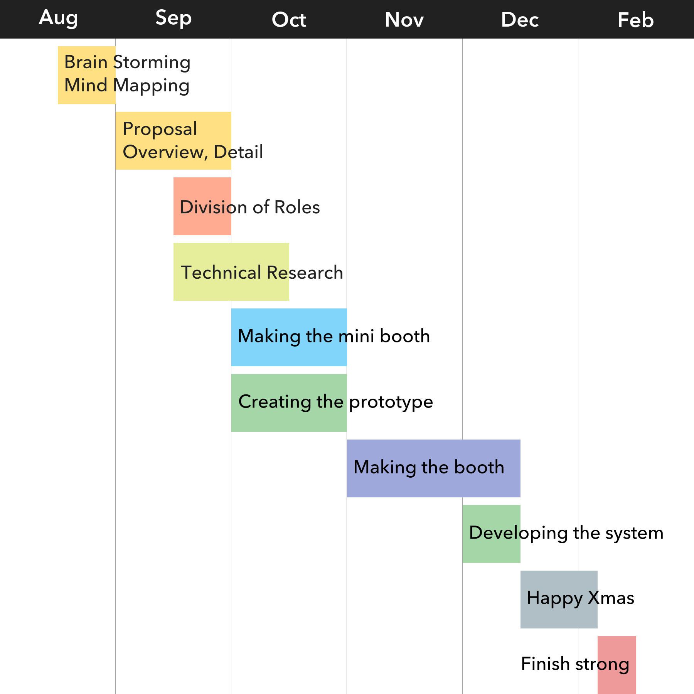

an interactive game with your emotion
Why EMO-CHO?
日本人、特に日本人女性が社会で活躍できない傾向はなぜか？
それは自己主張が苦手だからです。
男尊女卑で女性は男性を立てるものだという考えが、未だに後を引いているのかもしれません。
自己主張・自己表現ができるようになれば、生き生きとして輝いて見えるし、社会的な活躍もできるようになるのでは？
そんな考えからEMO-CHO（えもっちょ）は生まれました。
感情をリアルタイムにスコア化し、それを直感的に理解できる形でフィードバックする。
シンプルな仕組みで、普段は感情表現が苦手な人も感情を表に出せるようにしてくれます。
ゲーム感覚で楽しみながら、輝く女性に変身しましょう！
企画の経緯
最初は「女性と言えばファッション！」ということで、アパレルで使える「着せ替えARサイネージ」を考えていました。
でも、便利ではあるけど「女性が輝けるようになる革命」までにはならないし、
その割に実装も大変そう…ということで没になりました。
そんな中、他の企画案が通って、学年でも最速クラスだったので「これでいこう」となりかけました。
でも、正直その企画に魅力は感じてませんでした。「結局何をどうしたいの？便利なだけじゃない？」という。
そして「やっぱりサイネージでやりたい！」ということで、チームで企画をやり直すことにしました。
難航する中、ネットニュースで見た「感情認識API」を使った技術ドリブンな企画を思いつきました。
そこからはアイデアの嵐でした。
みんなが「こうしたらおもしろい」とか「こういうのはどう？」という案が山のように出て、
企画に落とし込むのが逆に大変なくらいでした。
結局、企画書が通ったのは学年でも最後の方で、でもだからこそ一番考えられた企画だったのかもしれません。
自分たちがつくって楽しいと思えるものをつくるのが一番いいものになると思います。結局は自己満足なのです。
Playing Flow
- Webカメラで常に画像認識を行っています。
- 人の顔を認識すると、「笑顔でスタート」するように促します。
- 笑顔をつくると、感情ルーレットでランダムに感情を指定します。
- 制限時間内に指定された感情を表現します。 感情値が高いほどスコアが高くなり、派手なエフェクトが演出されます。
- プレイ中に最も感情値が高い瞬間の画像と、プレイ中の動画を振り返ることができます。 Twitterにシェアすることもできます。
- 今までプレイした人たちの画像が並んで表示されます。 もちろん、あなたの画像も！
Using
- Git ソースコード管理。正直ちゃんと使ってなかった
- GitHub Gitリポジトリ。オープンソースですね。シークレット情報には注意しましょう
- npm 依存ライブラリ管理。これなしでは生きられない
- webpack ソースコードをまとめたり変換したりするやつ。使えば使うほど旨味が出ます
- HTML5 いわずもがな。タグは当たり前。APIは後述
- Sass CSSを便利に書けるやつ。SassというかSCSS
- Babel JSを便利に書けるやつ。今回はES2015だったけどTypeScriptの方がオススメ
- Navigator.getUserMedia() Webカメラの映像をとってくるやつ。FireFoxしかまともに実装されてなかった
- HTMLVideoElement WebRTCでとってきた映像とか録画した映像とか
- MediaRecorder Canvasとかを録画するやつ
- Canvas API HTMLで自由度の高いグラフィック表現できるやつ。素でも結構便利
- CreateJS Canvasの描画やアニメーションを便利に書けるやつ。結構古かった。今だとUnityなのかなぁ
- SuperAgent Ajaxやつ。Web API叩くマン
- Face API 顔認識API。静止画から顔の矩形とかパーツの情報がとれる
- Emotion API 感情認識API。正直これに丸投げだった
- PHP いわずもがな。Twitter API叩くために渋々使った
- TwitterOAuth Twitter APIを簡単に叩けるようにしてくれるやつ。簡単に使えすぎてよくわかってない
- FFmpeg みんな大好きFFmpeg。動画形式が悲しい感じだったのでデコード／エンコードするやつ
Schedule

Technical Flow
- Initialize
- Get WebCam Stream
- Render
Advices
comming soon...